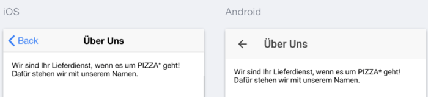

Ionic 2 Tutorial - Einstieg zu hybriden Apps
tutorial ionic2 angular angular2 angular4 | Bengt Weiße • | 29 Minuten
Nach unserem Ionic 1 Tutorial über Ionic 1 und das Ionic Framework wird es Zeit, sich die neue Version des Frameworks zur Erstellung von mobilen hybriden Apps anzusehen.
Dabei setzt das Ionic-Team auf Angular und benutzt daher auch vieles aus diesem neuen Universum. Daher bietet es sich an vorher unsere Artikel über Angular 2 zu lesen oder zumindest einen Blick in unser Angular Einführungstutorial zu werfen.
Dieses Tutorial orientiert sich stark an den Inhalten der Einführung zu Ionic 1. Dadurch könnt ihr vergleichen, was anders oder besser funktioniert. Außerdem findet ihr dort alle allgemeinen Grundlagen und Informationen, was Ionic genau ist, worauf es basiert und was ihr damit machen könnt. Daher sparen wir uns diese Punkte hier und steigen direkt bei der Entwicklung ein. Unser Tutorial ist in drei Abschnitte aufgeteilt.
Teil 1: Allgemein
- Installation und Anlegen eines Projekts
- Anlegen einer App und Starten einer App
- Erstellen von Inhalten mit
@Component - Die Basiskomponenten -
ionContentundionToolbarmitionHeader/ionFooter - Elegante und einfache Navigation -
NavController,ionNavundionNavBar - Nutzung von Seitenmenüs über
ionMenu
Teil 2: Strukturierung von Inhalten
- Einfache und komplexe Listen -
ionList,ionItemundionItemSliding - Ladehandling - Ladelayer und - spinner mit
LoadingundionSpinner - Aktualisierung von Inhalten durch den
ionRefresher - Strukturierung von Inhalten durch Cards und
ionCard - Anzeigen zusätzlicher Informationen in Dialogen mit
Modal - Realisierung von Hinweisen und kurzer Nutzerabfragen durch
Alerts - Statusmeldungen über
Toasts
Teil 3: Weitere und besondere Bestandteile des Frameworks
- Nutzung der Ionicons über
ionIcon - Theming der eigenen App
- Konfiguration eurer App
- Zugriff auf native Schnittstellen (Plugins) durch
ionic-native - Ein einfaches Eventsystem
In diesem Artikel behandeln wir zunächst den 1. Teil und schauen uns den Grundaufbau einer Ionic 2 Anwendung an.
Den finalen und kompletten Quellcode der in diesem Tutorial entwickelten App findet unter unserem GitHub-Account. Außerdem gibt es auch eine Live-Vorschau der App.
Du möchtest dich oder dein ganzen Team schnellstmöglich produktive Ionic Anwendung entwickeln lassen? Dann nutze unsere Ionic und TypeScript Schulungen. Wir haben die Konzepte des Frameworks und unsere Projekterfahrung für euch in einen interaktiven Kurs gegossen.

Installation und Anlegen eines Projekts
Wie auch schon Ionic 1, basiert die neue Version ebenso auf dem Ionic CLI. Damit ihr auch alle nötigen Quellen der neue Version besitzt, müsst ihr diese über folgenden Befehl installieren.
npm install -g ionic
npm install -g cordova
Danach könnt ihr über ionic alle gängigen und bereits aus Version 1 bekannten Befehle nutzen.
Wollt ihr jedoch ein neues Ionic Projekt auf Basis der neuen Version erstellen müsst ihr den ionic start-Befehl um den Parameter --v2 erweitern. Dadurch erhalten wir ein vollständig eingerichtetes Projekt zur Entwicklung mit TypeScript.
Wie in Ionic 1 können wir im Befehl auch noch ein vordefiniertes Template angeben. Wir entscheiden uns für ein komplett sauberes (blank) Projekt.
Unter der Angabe des Projektnamens ionic2-pizza-service erzeugen wir mit diesem Kommando ein neues Ionic 2 Projekt in TypeScript.
ionic start ionic2-pizza-service blank --v2
Über den serve-Befehl könnt ihr die App in einem neuen Browserfenster starten. Ändert ihr eine Datei, wird dieses immer automatisch aktualisiert nachdem die Anwendung neu gebaut wurde.
ionic serve --lab
Durch den --lab Parameter erhaltet ihr eine Gegenüberstellung vom Layout eurer App auf iOS und Android.

Anlegen einer App
In diesem Tutorial versuchen wir uns weitestgehend an den Angular 2 Style-Guide zu halten.
Nachdem wir erfolgreich ein Projekt angelegt und es schon angesehen haben, sollten wir verstehen, wie wir selbst eine App anlegen können. Dazu schauen wir uns einmal den Inhalt unseres Projekt-Ordners an.
Für uns und dieses Tutorial sind im Grunde nur zwei Ordner interessant.
- src - beinhaltet alle Quellen der App
- www - enthält die kompilierte Version unserer App
Die reine Ionic Entwicklung findet im src Verzeichnis statt. Dort werden wir uns auch im Laufe des Tutorials aufhalten. Hier können wir mit TypeScript arbeiten und der Bauprozess von Ionic greift automatisch, wenn ihr die Anwendung mit ionic serve gestartet habt. Im www Ordner landen dann die reinen JavaScript-Dateien, die aus dem Bauprozess herausfallen. Dies ist nötig da die meisten Browser bisher die JavaScript-Standard ES5.1 unterstützen. Mit Angular 2 und Ionic 2 können wir aber einfach schon den neuen ES2015-Standard nutzen. In unserem Fall auch die nicht in JavaScript - aber in TypeScript - vorhandene Typisierung.
Werfen wir also den ersten Blick in das src/app-Verzeichnis. In diesem Kapitel ist für uns auch nur eine Datei - die app.component.ts interessant. Diese sollte jetzt ungefähr so aussehen. Alles Uninteressante blenden wir erstmal aus.
import {Component} from '@angular/core';
@Component({
template: `...`,
// ...
})
export class PizzaAppComponent {
// ...
}
So wie generell in TypeScript und Angular 2, kann ein Modul Abhängigkeiten zu anderen Modulen haben. In diesem Fall bietet uns Ionic über ionic-angular einen Werkzeugkasten mit allen Dingen, die wir brauchen könnten. In unserem Falle benutzt Ionic 2 jedoch den normalen Component Decorator. Diesen nutzen wir um eine Klasse als unsere Anwendung auszuzeichnen. Er nimmt Optionen entgegen, um unsere Komponente zu konfigurieren. Als Beispiel benötigt die Anwendung häufig ein Basis-Template.
Damit weiß Ionic jedoch noch nicht, wo es die Anwendung starten soll. Warum funktioniert unsere Anwendung dann bereits? Dazu schauen wir jetzt in den www Ordner und öffnen die index.html. Dort entdecken wir im body eine Direktive mit dem Namen ionApp. Sie sorgt dafür, dass hier unsere Anwendung zumindest in den DOM eingehangen wird.
Beispiel
Da wir ja alles von Anfang an selbst erarbeiten wollen, ersetzen wir den gesamten Inhalt der app.component.ts mit einem minimalen Hello World! Beispiel.
import {Component} from '@angular/core';
@Component({
template: 'Hello World!'
})
export class PizzaAppComponent {}
Das ist natürlich nicht alles. Wir müssen unsere PizzaAppComponent auch beim Aufruf der Anwendung starten, damit Ionic unsere Komponente dort einhängen kann. Dazu wechseln wir in die app.module.ts, wo über ionic-angular das spezielle IonicModule Methode geladen werden kann. Es wird dann wie folgt in unserem Modul als import angegeben und aufgerufen.
@NgModule({
declarations: [...],
imports: [
IonicModule.forRoot(PizzaAppComponent)
],
bootstrap: [IonicApp],
entryComponents: [...]
})
Wir starten unsere Anwendung nun unter der Angabe unserer PizzaAppComponent.
Das Ergebnis sieht im Browser zwar nicht mehr sonderlich ansprechend aus, aber das wird schon noch ;-). Versprochen!

Erstellen von Inhalten
So wie die App ist auch jede View in der Ionic 2 Welt eine simple Angular2 Component. Eine View ist dabei die gesamte Ansicht einer Seite in der Anwendung. Die Konfiguration einer Seite im Quellcode ist daher hier nichts besonderes, denn die Komponente verknüpft einfach ein Template mit einer Klasse.
Standardmäßig existiert - auch in unserem Projekt - neben dem app Verzeichnis ein Ordner mit dem Namen pages. Hier liegen alle bereits vordefinierten Seiten.
- Entfernt die Inhalte des
pagesOrdner
Als nächstes definieren wir unsere zukünftige Startseite der Anwendung im pages Ordner. Sie wird später die Bestell-View werden. Dazu legen wir einen neuen Ordner mit dem Namen order an. In pages liegen alle Routen, die später nicht von uns manuell, sondern automatisch von Ionic 2 angezeigt werden. Wir laden diese sozusagen nicht selbst im Template, sondern das übernimmt für uns später vorgestellte Navigation.
@Component.In unserem neuen Ordner erstellen wir eine Datei mit dem Namen order.component.ts. Ein Dateiname sollte eindeutig sein. Aus diesem Grund folgt nach dem eigentlichen Namen noch der Typ, des darin enthaltenen Inhalts.
Fügt den nun folgenden Code in unsere order.component.ts ein.
import {Component} from '@angular/core';
@Component({
template: `<ion-content><b>Hello</b> World!</ion-content>`
})
export class OrderComponent {}
Das war auch schon alles. Component erhaltet ihr wieder über einen Import aus @angular/core. Danach setzt ihr den Decorator über eure Klasse. Dabei sollte der Name der Klasse dem Vorbild des Dateinamens folgen und wird aus eigentlichem Namen + Typ zusammengesetzt.
Unsere Seite hat als Template einfach nur die Zeichenkette “Hello World!!” und wird von einer Ionic-Direktive umschlossen, die euch im nächsten Kapitel näher erklärt wird. Damit sind wir aber noch nicht am Ende. Bisher weiß unsere App ja gar nichts von der neuen Seite.
Wir müssen diese der App bekannt machen und als Startseite setzen. Dazu gehen wir in unsere app.component.ts und ersetzen ihren Inhalt mit folgenden Zeilen.
//...
import {OrderComponent} from '../pages/order/order.component';
@Component({
template: '<ion-nav [root]="rootPage"></ion-nav>'
})
export class PizzaAppComponent {
rootPage: any = OrderComponent;
}
Zusätzlich zum Component Decorator importieren wir jetzt unsere Seite. Außerdem schaffen wir im Template über ionNav einen Einstiegspunkt in unsere zukünftige Navigation. Über das Attribute root setzen wir sozusagen die Wurzel und somit unsere Startseite. Damit unsere OrderComponent genutzt wird, speichern wir die Klasse auf eine im Template verfügbare Variable.
Wie das mit der Navigation genau funktioniert, wird in einem späteren Kapitel erklärt. Für uns ist nur wichtig, dass unsere Seite auch funktioniert!

Die Basiskomponenten
Wie schon in unserem Tutorial zu Ionic 1 wird es jetzt Zeit unserer Anwendung auch ein entsprechendes Aussehen zu verpassen. Für die Grundeinteilung einer View stehen dazu zwei eigene Komponenten zur Verfügung.
- ionContent - eigentliche Inhalt der View (scrollbar)
- ionHeader/ionFooter - erzeugt Fuß- und Kopfzeilen
- ionToolbar - erstellt Funktionsleiste in Kopf- oder Fußzeile
Content
Im vorherigen Abschnitt haben wir bereits die ionContent Komponente benutzt. Sie umschließt den Inhalt der Seite und kümmert sich automatisch um das Scrolling. Ein Template einer Component enthält immer genau einen ionContent. Oft brauchen wir auch programmatischen Zugriff auf unseren Inhalt. Als Beispiel wollen wir bei bestimmten Interaktionen zum Seitenanfang oder an das Ende springen. Dazu brauchen wir den speziellen @ViewChild Decorator aus Angular 2. Er erlaubt uns auf Kind-Komponenten der aktuellen Komponenten zuzugreifen. Da wir TypeScript nutzen, sollten wir möglichst alles Typisieren. So stellt uns ionic-angular für die Ionic Komponenten und Services alles nötige zur Verfügung. Wir können daraus Content importieren und nutzen.
Wir erweitern unsere Startseite nun so, dass wir unseren Inhalt scrollen können. Am Ende und am Anfang bauen wir eine Schaltfläche ein, die nach oben bzw. nach unten scrollt.
import {Component, ViewChild} from '@angular/core';
import {Content} from 'ionic-angular';
@Component({
template: `
<ion-content>
<button ion-button (click)="scrollToBottom()">To Bottom</button>
<div style="height: 2000px;">
<b>Hello</b> World!
</div>
<b>on bottom</b>
<button ion-button (click)="scrollToTop()">To Top</button>
</ion-content>`
})
export class OrderComponent {
@ViewChild(Content) content: Content;
scrollToTop() {
this.content.scrollToTop();
}
scrollToBottom() {
this.content.scrollToBottom();
}
}

Auf unserem content Objekt stehen neben den Scroll-Funktionen noch weitere zur Verfügung, die wir hier kurz auflisten. Ihre genaue Anwendung findet ihr in der Ionic 2 Dokumentation.
Content Funktionen
- scrollTo(x, y, duration)
- scrollToTop(duration)
- getScrollTop()
- setScrollTop(top)
- scrollToBottom()
- getContentDimensions()
- resize()
Toolbars in Kopf- und Fußzeile
Genauso simpel, wie ein Inhaltsbereich ausgezeichnet werden kann, könnt ihr Toolbars erstellen. Diese dienen dazu sowohl Kopf- als auch Fußzeilen zu erzeugen. Im Vergleich zu Ionic 1 funktioniert dies nun viel einfacher und generischer. Wir sind nun nicht mehr auf zwei Kopf- bzw. Fußzeilen beschränkt.
Eine Toolbar wird durch die Komponente ionToolbar erstellt. Sie kann per ionHeader oder ionFooter Komponente positioniert werden.
Als Inhalt kann eine Toolbar eine Vielzahl verschiedener Informationen und Funktionen beinhalten. Dabei kann beispielsweise ein Titel gesetzt, Funktionsbuttons eingefügt oder eine Suchleiste angezeigt werden. Unsere Startseite erhält nun zwei Kopfzeilen. Eine hält den Seitentitel (über ionTitle) und die zweite eine Suchleiste (mit Hilfe von ionSearchbar).
Damit unsere Klasse nicht zu aufgebläht wird, lagern wir unser Template in eine extra Datei mit dem Namen order.component.html aus und ersetzen im @Component template mit templateUrl. Der Pfad zeigt dann auf die gebaute Variante der App.
@Component({
templateUrl: 'order.component.html'
})
//...
<ion-header>
<ion-toolbar>
<ion-title>Pizza App</ion-title>
</ion-toolbar>
<ion-toolbar position="top">
<ion-searchbar></ion-searchbar>
</ion-toolbar>
</ion-header>
<ion-content padding>
<b>Hello</b> World!
</ion-content>`

Ein wichtiger Anwendungsfall ist das Ausrichten von Schaltflächen. Dies funktioniert ähnlich zu Ionic 1. Über die Komponente ionButtons lassen sich diese unter Angabe der Position anordnen. Damit aus einem normalen Link oder einer Schaltfläche ein Ionic-Button wird, sollten wir die Direktive ion-button an die Schaltflächen schreiben.
<ion-toolbar>
<ion-buttons start>
<button ion-button>Left</button>
</ion-buttons>
<ion-title>Pizza App</ion-title>
<ion-buttons end>
<button ion-button>Right</button>
</ion-buttons>
</ion-toolbar>
Mit Ionic 2 ist es auch möglich, dass der Inhalt des ionContent hinter der Kopfzeile entlang scrollt. Dies macht vor allem mit einer transparenten Kopfzeile etwas her. Dazu setzt ihr am ionContent einfach das Attribut fullscreen auf true.
Elegante und einfache Navigation
Das Herzstück eine App ist ihre Navigation. Sie sollte gut durchdacht und einfach zu verstehen sein. In der neuen Version des Frameworks wird das Navigieren noch einfacher. Das mühselige Definieren von Routen oder Zuständen entfällt. Keine lästigen Angaben von komplexen Urls oder Namen. Möglich wird dies über den NavController von Ionic.
Der NavController
Auch er ist wieder über ionic-angular verfügbar. Per Abhängigkeit kann die aktuelle Instanz von diesem in eine Seiten Component injiziert werden.
import {NavController} from 'ionic-angular';
@Component({
templateUrl: 'order.component.html'
})
export class OrderComponent {
constructor (private nav: NavController) {}
}
Dieser NavController erlaubt uns mittels den Funktionen:
- push(page, params, navOpts) - navigiert zur angegeben Seite, wird oben auf den Stack gelegt
- pop(navOpts) - navigiert zurück, entfernt letzten Eintrag vom Stapel
- present(component, navOpts) - für Overlays, z.B. Alert, Modal
- setRoot(page, params, navOpts) - Setzt Wurzel des Navigationsstacks
den Navigations-Stack zu manipulieren. Alle weiteren Funktionen findet ihr in der NavController Dokumentation.
App Component Klasse benötigt, ist dieser erst nach dem Initialisieren verfügbar und kann nicht einfach per Dependency Injection geladen werden! Nutzt als Alternative @ViewChild aus Angular2 und Nav aus *ionic-angular*Benötigt ihr den NavController bereits in der App-Definition/Klasse ist es nicht ganz so einfach. Denn erst nach dem Initialisieren der Anwendung und ihrer Kind-Komponenten ist die Navigation bereit. Damit ihr trotzdem Zugriff darauf bekommt, könnt ihr euch einen Angular 2 Decorator zu Nutze machen. Über @ViewChild bekommt ihr Zugriff auf eine Kind-Komponente. Da die Navigation eine besondere Kind-Komponente unser App ist, können wir diese laden.
Zur Typisierung stellt Ionic die Navigation-Komponente über Nav bereit.
import {Nav} from 'ionic-angular';
@Component({
template: '<ion-nav id="my-nav" [root]="rootPage"></ion-nav>'
})
export class PizzaServiceComponent implements AfterViewInit {
@ViewChild(Nav) nav: Nav;
constructor(private app: App) {}
}
Einhangspunkte für Inhalte und Seiten
Damit überhaupt navigiert werden kann, müssen wir einen Einhangspunkt in unserer App definieren. Dort wird der Inhalt beim Seitenwechsel ausgetauscht. Wir schauen uns dazu unsere app.component.ts nochmals an. Im Template finden wir bereits die ionNav Komponente. Sie erlaubt uns dies und lässt uns auch die Startseite über das Input root setzen.
@Component({
template: '<ion-nav [root]="rootPage"></ion-nav>'
})
export class PizzaServiceApp {
rootPage: any = OrderComponent;
}
Definition einer Navigationsleiste
Als letzten Schritt zeichnen wir die oberste Toolbar in unserer OrderComponent als NavBar aus. Sie ist eine Erweiterung zur Nutzung eines automatisch eingeblendeten Zurück-Knopfes und des speziellen Verhaltens beim Seitenwechsels pro Plattform.
<ion-header>
<ion-navbar>
<ion-title>Pizza App</ion-title>
</ion-navbar>
</ion-header>
Navigieren innerhalb der App
Damit wir auch sicher gehen können, dass alles richtig funktioniert, erstellen wir eine weitere Datei in einem neuen Verzeichnis about mit dem Namen about.component.ts. Sie enthält eine Seite nur mit einem Template, welches wiederum Information zu unserem Pizza Service beinhalten soll.
import {Component} from '@angular/core';
@Component({
templateUrl: 'about.component.html'
})
export class AboutComponent {
constructor() {}
}
Das Template könnte wie folgt aussehen.
<ion-header>
<ion-navbar>
<ion-title>Über Uns</ion-title>
</ion-navbar>
</ion-header>
<ion-content padding>
Wir sind Ihr Lieferdienst, wenn es um PIZZA* geht! Dafür stehen wir mit unserem Namen.
</ion-content>
<ion-footer>
<ion-toolbar>
<small>*ohne Ananas!</small>
</ion-toolbar>
</ion-footer>
An dieser Stelle wollen wir auch barrels nutzen. Dadurch werden alle Exporte in einem Verzeichnis in einer Datei gesammelt. Dazu erstellen wir im about Ordner eine index.ts, die unsere AboutComponent exportiert.
export {AboutComponent} from './about.component.ts';
Nun importieren wir die Seite in unsere OrderComponent.
import {AboutComponent} from '../about/index';
Jetzt nutzen wir diese, um mittels einer Schaltfläche zu ihr zu navigieren. Dabei können wir den NavController nutzen oder Ionics navPush Direktive. Sie nimmt eine Component Klasse entgegen, um zu dieser zu navigieren.
Zunächst machen wir die AboutComponent in der OrderComponent verfügbar.
// OrderComponent class
import {AboutComponent} from '../about/index';
@Component(...)
export class OrderComponent {
aboutComponent = AboutComponent;
constructor(...) {...}
}
Jetzt können wir aboutComponent im Template nutzen.
<button [navPush]="aboutComponent">Über Uns</button>
Mit der navParams Direktive können auch mögliche Seitenparameter gesetzt werden.
<button [navPush]="aboutComponent" [navParams]="optionalParams">Über Uns</button>
Natürlich existiert als Gegenstück auch eine navPop Direktive, um einfach selbst einen Zurückknopf zu definieren.
Wir entscheiden uns aber hier für den programmatischen Weg und navigieren mittels NavController zu unserer Über Uns Seite.
export class OrderComponent {
constructor(private nav: NavController) {}
openAbout() {
this.nav.push(AboutComponent);
}
}


Wir ihr sicher gemerkt habt, findet der Seitenwechsel mit der von der Plattform bekannten Animation statt. Der Zurück-Knopf wird auch automatisch auf der Über Uns Seite angezeigt.
In manchen Fällen müsst ihr darauf warten, dass der Seitenwechsel bzw. das Navigieren zu einer Seite abgeschlossen wurde. Als Beispiel habt ihr gerade ein Modal geöffnet. Nun wird dieses beim Klick auf eine Schaltfläche geschlossen. Zusätzlich wollt ihr jedoch auch noch zu einer anderen Seite navigieren. Hier könnt ihr euch zu nutze machen, dass viele Funktionen des NavControllers, wie push, setRoot, present, pop, Promises zurückgeben. Diese werden dann aufgelöst, wenn die Navigationsoperation abgeschlossen ist.
// begin the first transition
let navTransition = this.nav.push(SomeComponent);
// do something else - like api calls
someAsyncOperation().then(() => {
// if operation is faster than transition --> wait!
navTransition.then(() => {
this.nav.push(AnotherComponent);
});
});
Navigation mit Parametern
Programmatischen Zugriff auf die übergebenen Navigationsparameter erhaltet ihr über den NavParams Service. Einmal eingebunden, könnt ihr über seine get Funktion und unter der Angabe des Parameters den Wert abfragen.
import {NavParams, ...} from 'ionic-angular';
...
export class MyComponent {
constructor(params: NavParams){
this.params = params;
// id is a number in navigation parameters
this.params.get('id');
}
}
Dies werden wir später benötigen, wenn wir eine Detailansicht für unser Pizza-Angebot bauen.
Lifecycle einer Seite
Wie schon in Ionic 1 mit den ionView Events, existieren auch in Ionic 2 besondere Lifecycle Hooks, um auf die verschiedenen Lebenszustände einer View zu reagieren. In der folgenden Tabelle werden alle Hooks mit einer Erklärung aufgelistet.
| Hook | Erklärung |
|---|---|
| ionViewDidLoad | View wird geladen und gecached, ist View im Cache, wird dieser Hook nicht nochmal ausgeführt! |
| ionViewWillEnter | View startet die aktive View zu werden (Seitenübergang startet) |
| ionViewDidEnter | View ist aktive Seite (Seitenübergang abgeschlossen) |
| ionViewWillLeave | View wird verlassen (Seitenwechsel startet) |
| ionViewDidLeave | View wurde verlassen und ist nicht mehr aktiv (Seitenwechsel abgeschlossen) |
| ionViewWillUnload | View soll zerstört und ihr DOM-Element entfernt werden |
Die Lifecycle Hooks erlauben es uns bestimmte Aktionen bevor und nach dem Anzeigen bzw. dem Verlassen einer Seite auszuführen. Wollen wir aus Performance-Gründen aufwendige Logik erst nach bzw. vor dem Seitenübergang ausführen, dann können wir auf die meisten Hooks nicht mehr verzichten.
Nutzung von Seitenmenüs
In vielen Apps reichen Tabs als Grundnavigationselement nicht aus. Sei es aufgrund eines recht hohen Funktionsumfangs oder der Anzahl an unterschiedlichen Inhalten. Wie schon im Ionic 1 Tutorial wollen wir uns in unserer App über ein Seitenmenü durchnavigieren können. Natürlich geht dies auch in Ionic 2.
ionMenu
Hauptbestandteil des ganzen ist dabei die ionMenu Komponente. Sie zeichnet die Definition unseres Seitenmenüs im Template aus. Sein Inhalt wird weiterhin von einer ionContent Komponente umschlossen. Es ist natürlich auch möglich über ionToolbar Komponenten zusätzliche Kopf- und Fußzeilen einzufügen.
<ion-menu>
<ion-header>
<ion-toolbar>
<ion-title>Menü</ion-title>
</ion-toolbar>
</ion-header>
<ion-content>
</ion-content>
</ion-menu>
Damit das Menü aber funktionieren kann, muss es neben unserer ionNav liegen. Es ist eng mit der Navigation verbunden, wodurch es sogar noch unseren ionNav Knoten benötigt, um sich daran auszurichten und zusätzliche Funktionen, wie das Öffnen bzw. Schließen des Menüs durch das Ziehen bzw. Schieben am normalen App Inhalt bereitzustellen. Dafür müssen wir das content @Input von ionMenu setzen. Mittels einer lokalen Template-Variablen können wir uns das ionNav Element zwischenspeichern und content zuweisen.
Das Template unserer Anwendung sieht dann wie folgt aus.
<ion-menu [content]="content">
<ion-header>
<ion-toolbar>
<ion-title>Menü</ion-title>
</ion-toolbar>
</ion-header>
<ion-content>
</ion-content>
</ion-menu>
<ion-nav [root]="rootPage" #content>
</ion-nav>
Zieht ihr jetzt am Inhalt der Startseite, sollte sich langsam auf der linken Seite das Menü auffahren.

Hier könnt ihr erkennen, dass Ionic weiter an der Individualisierung pro Plattform gearbeitet hat. Unter Android legt sich das Menü über den eigentlichen Inhalt. Auf iOS schiebt es den Inhalt nach rechts aus der View.
Standardmäßig wird ein Menü auf der linken Seite eingefügt. Es spricht aber nichts dagegen es auch auf der rechten Seite oder auf beiden zu nutzen. Dazu könnt ihr über das Attribute side direkt left oder right angeben. Zusätzlich lässt sich auch die Art des Menüs festlegen. So könnt ihr entscheiden, ob ihr beispielsweise immer das iOS Menü nutzen wollt. Dazu könnt ihr über type zwischen den Werten overlay, reveal und push entscheiden.
menuToggle
Jetzt wäre es ja doch auch schön, wenn wir über ein Menü-Icon in der Kopfzeile unserer Startseite das Menü öffnen und schließen könnten. Dazu gehen wir in das Template der Bestellseite und fügen in die Navigationsleiste eine Schaltfläche ein und setzen an ihr die Direktive menuToggle. Sie sucht sich, wenn nicht weiter spezifiziert, das passende Menü und öffnet bzw. schließt es.
<button menuToggle ion-button icon-only>
<ion-icon name='menu'></ion-icon>
</button>
Falls ihr mehrere Seitenmenüs habt, könnt ihr menuToggle noch einen Wert mitgeben, der entweder für die gesetzt side oder id eines Menüs steht.
Ein ionButton kann so konfiguriert werden, dass er nur ein Icon oder Icon und Text beinhaltet.
-
icon-only: Icon als button -
icon-left: erst Icon dann Text -
icon-right: erst Text dann Icon

persistent am Menü auf true setzen.Neben der menuToggle existiert auch noch die menuClose Direktive. Benutzt ihr diese an einem Button oder Link, wird das Menü automatisch geschlossen.
MenuController
Als letztes müssen wir nur noch klären, wie wir auch programmatischen Zugriff auf Menüs bekommen. Nicht allzu selten müssen wir ein Menü programmatisch schließen oder öffnen, deaktivieren bzw. aktivieren oder mit mehreren Menüs umgehen. Für diese Zwecke stellt uns Ionic den MenuController zur Verfügung.
import { MenuController} from 'ionic-angular';
Dieser besitzt folgende Funktionen. Der [id] Parameter ist optional und wird nur benötigt, wenn ihr mehrere Seitenmenüs habt. In solchen Fällen könnt ihr die am ionMenu gesetzte id nutzen, um Zugriff auf ein bestimmtes Zugriff zu bekommen.
- open([id])
- öffnet ein Menü
- gibt Promise zurück, wenn Menü geöffnet wurde
- close([id])
- schließt ein Menü
- gibt Promise zurück, wenn Menü geschlossen wurde
- toggle([id])
- öffnet/schließt ein Menü
- gibt Promise zurück, wenn Menü geöffnet/geschlossen wurde
- enable([id])
- aktiviert/deaktiviert ein Menü
- gibt die Menü-Instanz zurück
- swipeEnable(enable, [id])
- aktiviert/deaktiviert das Aufziehen des Menüs
- gibt
trueoderfalsezurück
- isOpen([id])
- ob Menü gerade geöffnet ist
- gibt
trueoderfalsezurück
- get(id) - gibt ein Menü anhand der
idzurück- gibt die Menü-Instanz zurück
- getMenus()
- gibt alle Menüs als Liste von Menü-Instanzen zurück
Als nächsten füllen wir unser Seitenmenü mit einer einfachen Liste von Links zu zukünftigen und bisherigen Seiten, wie der Warenkorb und unserer Über Uns Seite. Hier könnt ihr das Wissen über die Navigation wiederverwenden. Wir haben außerdem Ionic Listen genutzt, um die Links zu formatieren. Wie das genau funktioniert, erfahrt ihr in Teil 2 unseres Tutorials.

Wie geht es weiter
Wir sind jedoch noch nicht annähernd am Ende mit der Entwicklung unserer Pizza-Service App. Seht wie es weiter geht:
Teil 2: Strukturierung von Inhalten Teil 3: Weitere und besondere Funktionen
Fazit
Nachdem ich die Entwicklung von Ionic 2 bis dato nur immer mal sporadisch verfolgt hatte, ist mein vorheriges Misstrauen bereits jetzt vollkommen verschwunden. Das Ionic Team hat - wie das Angular Team - aus den Erfahrungen und Problemen gelernt und vieles verbessert. Vor allem die Lösung der neuen Navigation macht Spaß, weil einfach anscheinend in diesem Fall wirklich einfach einfach ist.
Das Tutorial ist riesig geworden und trotzdem konnten wir wieder nicht alles vorstellen, was das Framework in der Gesamtheit bietet. Nicht unerwähnt soll die immer besser werdende Windows Phone Unterstützung bleiben.
Schaut euch einfach die Dokumentation an, was das Framework noch alles so bietet (Tabs, ActionSheets, …).
Wir hoffen das Tutorial hat euch gefallen und ihr konntet das eine oder andere Hilfreiche entnehmen.
Viel Spaß beim Ausprobieren und Entwickeln der eigenen App!
Noch schneller lernen geht nur in unseren Ionic und TypeScript Schulungen. In kleinen Gruppen bieten wir öffentliche und Inhouse Schulungen an, um dich möglichst effektiv in das Thema Ionic zu begleiten.


Bengt Weiße
Bengt Weiße kommt aus dem grünen Herzen Deutschlands und interessiert sich schon seit seiner Kindheit für die Webentwicklung. Darum machte er auch sein früheres Hobby zum Beruf. Er beschäftigt sich bereits seit mehreren Jahren mit Web- und hybriden mobilen Anwendungen. Neben der frontendseitigen Umsetzung entwickelt er auch die nötigen Schnittstellen auf Basis von NodeJS und MongoDB. Anfang 2016 veröffentlichte er das erste deutsche Buch über das Ionic Framwork mit dem Titel "AngularJS & Ionic Framework, welches auch die nötigen Grundlagen im Bereich AngularJS vermittelt.